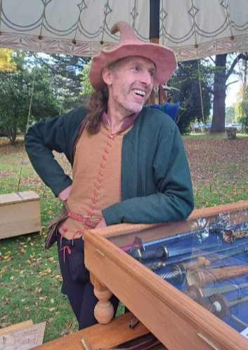
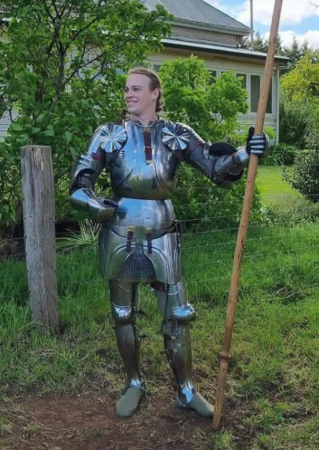
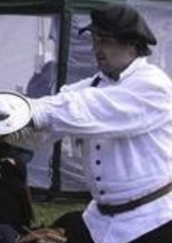
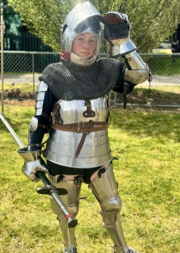
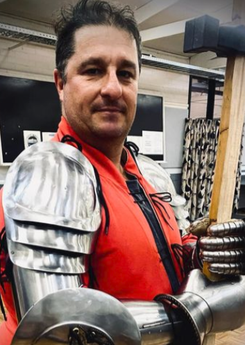

The Canberra based School of Arms and Armour presents the 2026 Harnischfechten Symposium.
The event will include workshops and discussions on a range of Harnischfechten topics for both people just getting into Harnischfechten and long-term practitioners.
| Saturday - 1st August | |||||||
| 9:00 am | Hall opens | Welcome and admin | |||||
| 10:00-11:00 | Fight Like A Girl - Women in armour Mel Bicket |
Everyone wants to wield a sword (if they don’t, they’re weird and shouldn’t be here). But have you noticed it’s a lot harder to get women into HEMA and even harder still to get them into armour? This discussion is an opportunity to acknowledge the barriers to women’s participation in Harnishfechten and explore the solutions. | |||||
| 11:00-12:00 | Fundamentals of Poleaxe pt1 Craig Sitch and Bayden Furness |
Drawing on the Fellowship of Liechtenauer Masters, Craig and Bayden take elements of longsword, and have adapted them for use with the poleaxe. The system also includes aspects from Le Jeu de la Hache, and Talhoffer, to name a couple. This workshop is suitable for students of all levels, as it looks at principles and techniques of poleaxe combat. It can be applied to both armoured and unarmoured combat. BYO poleaxe waster. Requirements – pollaxe (we have spares) |
|||||
| 12:00-13:00 | Lunch | ||||||
| 13:00-14:00 | Poleaxe Pt 2. | The second part of Polaxe Fundamentals | |||||
| 14:00-17:00 | Free-play/pick up fights | Includes a ‘come-and-try’ format for people who have not got their full harness yet. | |||||
| 17:00 | Hall closes. | ||||||
| 19:00 | Group Dinner and Drinks | TBC – local club/restaurant | |||||
| Sunday - 2nd August | |||||||
| 9:30 am | Hall opens | ||||||
| 10:00-11:00 | Working from the text Cornelius Weber |
The fechtbucher can be a bit impenetrable at times and can scare off new students. This workshop uses some selected pages from Gladitoria to demonstrate how to work though some of the original texts and work out what the hell they are on about. Minimum Class Requirements: Longsword. |
|||||
| 11:00-13:00 | Fight Like an Italian Richard Cullinan |
Using Italian Pedagogy to Understand Historical Fencing Manuals. Italian fencing masters such as Fiore and Vadi used a consistent pedagogy approach that has continued through to the modern day. In this class we will first define what we mean by Italian pedagogy, and then use this approach to demonstrate how we can analyse other fencing traditions to develop a method that allows us to organise the material that allows for deeper understanding of the material from those traditions. Minimum Class Requirements: longsword, mask, gauntlets Experience Level: beginner+ | |||||
| 13:00-14:00 | Lunch | ||||||
| 13:00-14:00 | Free-play/pick up fights | ||||||
| 17:00 | Hall closes. | ||||||
Craig has been a very active member of the Australian Living History and re-enactment community since 1991. He began his business, Manning Imperial, in 1996, in response to the increasing number of requests from living historians. Craig has dabbled in a number of historic martial arts systems, including I33 sword and buckler, and George Silver. Around 2013 he started exploring the traditions of Lichtenaur, and hasn't looked back since. As both a craftsman, and martial arts practitioner, Craig brings a unique perspective to his HEMA instruction.

Bayden has been an active member of the re-enactment, HEMA and LARP communities since 2014. Focusing on learning, improving, and teaching combat skills. He has spent many hours working on refining his understanding of all aspects of combat and turning it into a concise system. He has focused on the Lichtenauer linage but has also dabbled in other manuscripts to provide better clarity on HEMA combat. Bayden's focus on perfect posture, positioning and improvement provides a very analytical approach to getting the best out of each movement.

Richard is the Chief Instructor of the Drummoyne and Rhodes branches of the Stoccata School of Defence, where he teaches various programs based on historical Italian fencing manuals. He is recognised internationally for his research in Bolognese swordsmanship, and is also qualified as an Instructor at Arms in Classical Italian fencing through the Fencing Masters Certificate program at Sonoma State University, California USA.

A lover of fantasy and history from a young age, Mel always wanted to be a hero wielding a sword. She is a founding member of the School of Arms and Armour and has dedicated her time and effort to increasing women’s participation in HEMA. Her Blossfechten initiative, Fight Like A Girl (FLAG) has been successful and has led to more women joining the school, participating in a free-play environment, and taking up their own opportunities to teach. Her coaching focuses on increasing the sport's accessibility and creating a welcoming environment. A perpetual student, Mel is currently studying to become a personal trainer and recently took up professional wrestling (Don’t ask; she’ll talk your ear off).

Cornelius started mucking about with swords and armour at the start of the 90’s and has been obsessed ever since. Along the way Cornelius has fought and won tournaments, been a professional armourer, taught throughout Australia, presented school programs, gained a Dan grade in Kendo and founded the School of Arms and Armour. These days he divides his time between the School, coaching mountain bike skills, historical shooting, and getting people into armour.
